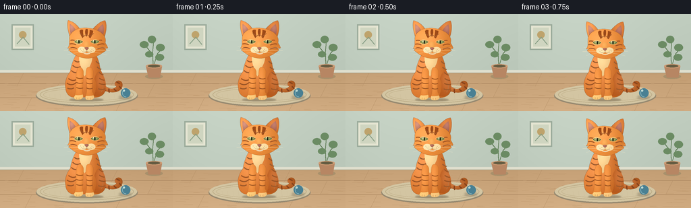
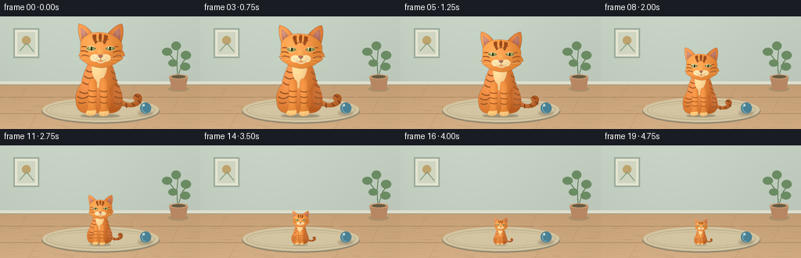

CODING AGENTS AS PIXEL WORLD MODELS
traex/GPT-6.1-Sol · instance_preservation_0049
点击播放 · 原生 RGB 像素
逐轮保存的候选
回放视频、检查图与代码变化。
每份候选均可单独播放。实际图片检查记录在下方工具轨迹中。
候选 01播放与检查图
点击播放 · 原生 RGB 像素


展开代码变化
--- 上一保存版本
+++ 本次保存版本
@@ -0,0 +1,195 @@
+from pathlib import Path
+import math
+import numpy as np
+from PIL import Image, ImageDraw, ImageFilter
+import artifact_io
+
+ROOT = Path(__file__).resolve().parent
+W,H = 256,144
+SS = 3
+rng = np.random.default_rng(28)
+
+# Hand-built Bezier geometry, rasterized at high resolution, with soft local shading.
+CW,CH=440,480
+CS=2
+cat=Image.new('RGBA',(CW*CS,CH*CS),(0,0,0,0))
+
+def curve_points(commands):
+ pts=[]; p=(0,0)
+ for c in commands:
+ if c[0]=='M': p=c[1:]; pts.append(p)
+ elif c[0]=='L': p=c[1:]; pts.append(p)
+ elif c[0]=='C':
+ a=np.array(p); b=np.array(c[1:3]); d=np.array(c[3:5]); e=np.array(c[5:7])
+ for t in np.linspace(0,1,28)[1:]:
+ q=(1-t)**3*a+3*(1-t)**2*t*b+3*(1-t)*t*t*d+t**3*e
+ pts.append(tuple(q))
+ p=tuple(e)
+ return pts
+
+def shape(cmd, color, shade=None, edge=None, width=1):
+ pts=curve_points(cmd)
+ mask=Image.new('L',cat.size); md=ImageDraw.Draw(mask)
+ md.polygon([(x*CS,y*CS) for x,y in pts],fill=255)
+ yy,xx=np.mgrid[0:CH*CS,0:CW*CS]; xx=xx/CS; yy=yy/CS
+ rgb=np.zeros((CH*CS,CW*CS,3),dtype=float)+np.array(color)
+ if shade:
+ cx,cy,rx,ry,amp=shade
+ gl=np.exp(-(((xx-cx)/rx)**2+((yy-cy)/ry)**2)*1.5)
+ rgb+=gl[...,None]*amp
+ # Warm studio illumination from upper left.
+ rgb+=(0.13*(210-xx)+0.025*(230-yy))[...,None]*np.array([1,.76,.46])
+ rgba=np.dstack([np.clip(rgb,0,255).astype('uint8'),np.array(mask)])
+ cat.alpha_composite(Image.fromarray(rgba))
+ if edge:
+ ImageDraw.Draw(cat).line([(x*CS,y*CS) for x,y in pts]+[(pts[0][0]*CS,pts[0][1]*CS)],fill=edge,width=max(1,int(width*CS)),joint='curve')
+
+def line(cmd,col,width=1):
+ pts=curve_points(cmd)
+ ImageDraw.Draw(cat).line([(x*CS,y*CS) for x,y in pts], fill=col,width=max(1,round(width*CS)),joint='curve')
+
+def ellipse(box,fill):
+ ImageDraw.Draw(cat).ellipse(tuple(v*CS for v in box),fill=fill)
+
+# Curled tail behind the body.
+shape([('M',253,378),('C',297,410,351,406,365,377),('C',379,350,353,331,335,346),('C',325,354,330,367,338,369),('C',325,389,294,387,270,356),('C',254,351,244,365,253,378)],(181,91,27),(302,368,76,37,45),(138,68,29,255),1.1)
+for cmd in [ [('M',277,367),('C',271,377,272,388,281,394)], [('M',300,382),('C',297,390,299,399,302,401)], [('M',325,382),('C',329,388,333,393,338,392)], [('M',351,370),('C',358,374,361,380,363,382)], [('M',337,346),('C',344,350,349,354,355,355)] ]:
+ line(cmd,(133,66,28,255),7)
+# Main pear-shaped body and hindquarters.
+shape([('M',148,183),('C',121,213,108,249,99,294),('C',81,319,69,349,76,379),('C',76,408,99,429,127,427),('C',159,430,184,422,205,426),('C',251,433,282,413,282,378),('C',285,343,268,308,255,282),('C',249,241,238,203,214,185),('C',188,177,170,178,148,183)],(196,101,31),(143,269,108,173,48),(131,72,34,255),1.2)
+# Haunch shaping.
+shape([('M',250,288),('C',281,316,289,363,278,393),('C',268,417,242,425,221,417),('C',233,391,240,357,224,332),('C',228,312,239,295,250,288)],(185,91,28),(261,336,43,80,32))
+line([('M',254,333),('C',271,353,273,381,259,399)],(149,73,28,140),1.4)
+# Body tabby stripes follow curvature.
+for cmd in [ [('M',121,235),('C',132,246,144,244,150,240)], [('M',112,260),('C',125,275,142,274,153,267)], [('M',105,287),('C',117,300,130,301,143,295)], [('M',90,329),('C',109,343,125,341,136,330)], [('M',82,352),('C',99,366,118,362,130,350)], [('M',85,378),('C',97,385,111,383,119,377)], [('M',232,239),('C',238,247,246,252,250,251)], [('M',238,269),('C',247,278,255,281,259,281)], [('M',247,296),('C',256,305,266,310,270,310)], [('M',249,327),('C',262,336,271,338,277,337)], [('M',247,353),('C',261,360,276,361,281,358)], [('M',244,381),('C',258,388,273,386,278,382)] ]:
+ line(cmd,(151,73,24,220),6)
+# A soft pale bib.
+shape([('M',151,196),('C',141,219,146,250,157,273),('C',164,286,161,302,174,318),('C',183,305,190,288,197,271),('C',211,247,220,218,207,199),('C',187,186,166,186,151,196)],(238,198,134),(167,225,43,64,22))
+# Two front legs.
+shape([('M',139,275),('C',150,266,165,274,168,293),('C',170,328,163,366,163,399),('C',171,418,162,433,142,436),('C',121,438,115,430,120,419),('C',130,398,129,372,130,343),('C',128,316,130,291,139,275)],(217,122,43),(143,331,27,120,30),(154,79,30,255),.8)
+shape([('M',186,274),('C',200,264,217,274,218,295),('C',217,332,210,373,214,399),('C',229,420,222,435,204,438),('C',182,442,173,433,178,421),('C',186,402,187,372,183,345),('C',180,315,178,286,186,274)],(215,119,39),(193,327,30,130,35),(149,76,29,255),.8)
+for y in [324,349,375]:
+ line([('M',131,y),('C',140,y+5,150,y+7,166,y+3)],(159,80,24,230),4.7)
+ line([('M',183,y+2),('C',193,y+9,206,y+9,215,y+4)],(155,76,23,230),4.7)
+# Feet cream-orange tips and delicate toe divisions.
+shape([('M',127,414),('C',135,417,151,416,164,412),('C',171,429,158,438,140,438),('C',124,439,115,431,121,422)],(239,187,107),(137,422,33,20,18))
+shape([('M',180,419),('C',193,421,207,419,219,416),('C',230,430,215,441,198,440),('C',182,441,174,435,180,419)],(241,190,115),(195,427,30,20,16))
+for x,y in [(134,427),(146,428),(191,429),(204,429)]:
+ line([('M',x,y),('C',x-2,y+2,x-2,y+6,x,y+8)],(164,116,66,255),.9)
+# Ears: solid outer fur with soft inner pinnae.
+shape([('M',100,119),('C',91,91,81,55,89,28),('C',116,35,139,54,153,80),('L',130,126)],(210,119,47),(102,66,45,56,35),(133,70,33,255),1.3)
+shape([('M',210,80),('C',232,55,254,33,279,29),('C',291,54,284,92,274,120),('L',234,126)],(200,105,36),(258,60,46,55,33),(133,70,33,255),1.3)
+shape([('M',98,47),('C',112,53,130,73,133,94),('L',104,105),('C',97,82,96,64,98,47)],(170,107,91),(107,63,19,25,30))
+shape([('M',268,48),('C',251,59,237,76,233,96),('L',269,104),('C',276,82,274,62,268,48)],(169,100,81),(260,65,22,30,28))
+# Head: rounded feline cheeks, not a circular human face.
+shape([('M',125,79),('C',150,62,208,64,237,80),('C',270,93,287,119,280,144),('C',286,157,297,167,290,174),('L',279,173),('L',285,184),('C',263,199,244,213,222,219),('C',198,229,171,226,151,219),('C',125,211,109,196,91,182),('L',98,173),('L',86,173),('C',99,158,94,146,96,126),('C',94,107,105,90,125,79)],(222,129,49),(157,119,99,93,36),(145,78,34,255),1.15)
+# Side cheek tufts and classic dark tabby facial bands.
+for cmd in [ [('M',101,132),('C',113,128,125,132,132,138)], [('M',97,151),('C',110,147,121,151,129,155)], [('M',101,171),('C',114,166,122,171,134,174)], [('M',264,132),('C',254,129,243,133,237,139)], [('M',276,152),('C',264,148,251,152,240,157)], [('M',276,172),('C',264,168,255,172,240,177)] ]:
+ line(cmd,(154,73,25,240),5)
+# Brow stripes form the recognizable M of a tabby.
+shape([('M',148,82),('C',150,99,157,110,163,120),('L',169,112),('C',166,99,165,89,166,77),('L',155,76)],(157,74,24))
+shape([('M',180,73),('C',173,91,178,103,184,113),('C',190,101,192,90,189,73)],(153,72,25))
+shape([('M',200,77),('C',201,90,197,103,196,116),('L',204,121),('C',213,104,218,93,217,82)],(157,74,24))
+line([('M',149,94),('L',170,110),('L',184,101),('L',200,112),('L',221,96)],(157,74,24,220),3)
+# Warm off-white eye surrounds.
+shape([('M',119,139),('C',126,124,149,122,167,138),('C',158,156,132,158,119,139)],(240,197,125),(138,138,30,18,10))
+shape([('M',202,138),('C',219,122,242,124,252,139),('C',239,156,214,154,202,138)],(234,183,102),(223,135,26,18,16))
+# Almond-shaped green-gold eyes with eyelid contours.
+shape([('M',122,139),('C',131,130,150,129,164,139),('C',152,151,134,150,122,139)],(113,127,58),(141,137,20,15,53),(80,61,30,255),1.8)
+shape([('M',206,139),('C',219,129,238,130,249,139),('C',236,150,217,150,206,139)],(114,129,62),(225,137,20,15,55),(80,61,30,255),1.8)
+ellipse((141,131,148,148),(35,38,23,255)); ellipse((223,131,230,148),(35,38,23,255))
+ellipse((135,132,140,137),(255,247,216,255)); ellipse((217,132,222,137),(255,247,216,255))
+# Nose bridge and plush twin muzzle lobes.
+shape([('M',174,137),('C',167,155,169,169,176,175),('L',196,175),('C',202,161,198,147,192,137)],(227,150,67),(180,151,20,30,23))
+shape([('M',175,169),('C',159,160,140,165,139,181),('C',138,195,163,204,181,193),('L',187,182),('C',186,178,180,172,175,169)],(249,221,168),(157,179,35,20,7))
+shape([('M',191,169),('C',208,159,230,166,230,182),('C',228,197,207,203,188,192),('L',183,181)],(245,213,154),(204,177,30,23,10))
+shape([('M',165,196),('C',174,207,198,209,207,195),('C',195,199,180,200,165,196)],(240,215,175))
+shape([('M',173,170),('C',179,166,190,166,196,171),('C',193,177,188,181,185,182),('C',180,180,176,177,173,170)],(164,96,80),(179,169,12,9,21),(110,66,54,255),.65)
+line([('M',185,180),('L',185,187),('C',178,193,169,194,161,190)],(116,77,52,255),1.15)
+line([('M',185,187),('C',192,193,204,193,211,189)],(116,77,52,255),1.15)
+for x,y in [(151,176),(157,184),(167,180),(210,177),(217,182),(205,184)]: ellipse((x,y,x+2,y+2),(139,102,69,255))
+# Fine cream whiskers sweep from either muzzle; consistent across every frame.
+for cmd in [ [('M',164,181),('C',135,174,106,173,73,163)], [('M',163,187),('C',128,183,103,187,67,186)], [('M',163,191),('C',133,195,109,202,86,207)], [('M',206,181),('C',239,171,264,171,300,163)], [('M',207,187),('C',238,182,270,185,304,184)], [('M',207,193),('C',239,194,264,202,290,208)] ]:
+ line(cmd,(251,234,198,235),.9)
+# Micro fur strokes, restricted to the silhouette and kept subtle.
+alpha=np.array(cat.getchannel('A'))
+fur=Image.new('RGBA',cat.size)
+fd=ImageDraw.Draw(fur)
+for _ in range(1100):
+ x=float(rng.uniform(87,277)); y=float(rng.uniform(74,416))
+ # Don't obscure the carefully defined eyes and muzzle.
+ if 115<x<254 and 125<y<208: continue
+ if alpha[int(y*CS),int(x*CS)]<250: continue
+ l=float(rng.uniform(1.4,4.5)); dx=(x-183)*.013
+ col=(255,207,122, int(rng.integers(20,51))) if rng.random()<.7 else (115,57,20,int(rng.integers(14,35)))
+ fd.line([(x*CS,y*CS),((x+dx)*CS,(y+l)*CS)],fill=col,width=1)
+cat=Image.alpha_composite(cat,fur)
+
+# Fixed room and props make the size change unambiguous, instead of a camera zoom.
+ww,hh=W*SS,H*SS
+yy,xx=np.mgrid[0:hh,0:ww]; y=yy/SS; x=xx/SS
+bg=np.zeros((hh,ww,3),dtype=float)
+wall=np.array([191,204,190]); floor=np.array([193,156,114])
+for c in range(3):
+ bg[:,:,c]=np.where(y<86,wall[c]+8*np.exp(-((x-89)/115)**2)-.075*y, floor[c]+.24*(y-86)+5*np.exp(-((x-88)/120)**2))
+bg=np.clip(bg,0,255).astype('uint8'); background=Image.fromarray(bg)
+d=ImageDraw.Draw(background)
+def rect(box,fill):d.rectangle(tuple(round(v*SS) for v in box),fill=fill)
+def ln(p,fill,width=1):d.line([(round(a*SS),round(b*SS)) for a,b in p],fill=fill,width=round(width*SS))
+# Baseboard and subtle wood grain.
+rect((0,83,256,87),(222,222,205)); ln([(0,87),(256,87)],(151,143,117),.5)
+for ay in [103,124]: ln([(0,ay),(256,ay)],(164,128,90),.55)
+for ax,ay in [(35,87),(174,87),(87,103),(229,103),(47,124),(182,124)]: ln([(ax,ay),(ax-10,ay+20)],(174,137,96),.4)
+for _ in range(90):
+ gx=rng.uniform(0,256); gy=rng.uniform(89,144)
+ ln([(gx,gy),(gx+rng.uniform(7,21),gy+rng.uniform(-.5,.5))],(191,153,110),.3)
+# A quiet decorative panel and plant, all static.
+rect((17,15,50,53),(155,171,155)); rect((19,17,48,51),(229,229,210)); rect((22,20,45,48),(207,213,192))
+d.ellipse((28*SS,25*SS,39*SS,36*SS),fill=(190,163,108))
+ln([(25,44),(34,34),(43,45)],(134,157,132),1)
+# Plant sits in the far right corner, dimly shaded.
+d.ellipse((215*SS,89*SS,241*SS,96*SS),fill=(168,144,107))
+for p in [[(227,80),(226,60),(215,46)],[(227,78),(233,59),(242,48)],[(227,80),(226,57),(228,34)]]: ln(p,(93,123,85),1.1)
+for box in [(207,40,220,50),(219,32,231,43),(231,44,244,55),(215,55,227,64),(230,59,243,69)]:
+ d.ellipse(tuple(v*SS for v in box),fill=(107,139,99))
+d.polygon([(216*SS,77*SS),(240*SS,77*SS),(237*SS,94*SS),(220*SS,94*SS)],fill=(183,134,99))
+d.ellipse((216*SS,74*SS,240*SS,80*SS),fill=(206,156,116))
+d.ellipse((219*SS,75*SS,237*SS,79*SS),fill=(101,92,66))
+# Flat woven rug underneath the cat, with softly illuminated edges.
+d.ellipse((53*SS,105*SS,204*SS,137*SS),fill=(150,137,112))
+d.ellipse((54*SS,104*SS,203*SS,135*SS),fill=(211,197,162))
+d.ellipse((59*SS,107*SS,198*SS,132*SS),outline=(187,171,134),width=SS)
+d.ellipse((64*SS,110*SS,193*SS,129*SS),outline=(199,183,146),width=SS)
+for k in range(16):
+ rx=65+k*8
+ ln([(rx,119),(rx+1,126)],(204,189,153),.3)
+# Small blue toy ball offers a persistent, familiar size reference.
+ball_shadow=Image.new('RGBA',(ww,hh)); bd=ImageDraw.Draw(ball_shadow)
+bd.ellipse((176*SS,121*SS,195*SS,126*SS),fill=(89,74,58,80))
+background=Image.alpha_composite(background.convert('RGBA'),ball_shadow.filter(ImageFilter.GaussianBlur(1.5*SS)))
+bd=ImageDraw.Draw(background)
+bd.ellipse((179*SS,110*SS,193*SS,124*SS),fill=(73,128,147))
+bd.arc((181*SS,111*SS,191*SS,123*SS),80,250,fill=(133,178,186),width=SS)
+bd.ellipse((182*SS,112*SS,185*SS,115*SS),fill=(188,216,211))
+
+frames=[]
+for i in range(20):
+ t=i/19
+ # A short opening hold, gradual shrink, and a short final hold.
+ u=np.clip((t-.08)/.84,0,1)
+ smooth=u*u*(3-2*u)
+ height=118*(1-smooth)+33*smooth
+ scale=height/(438-28)
+ image=background.copy()
+ # Ground contact remains fixed as every part of this same cat shrinks together.
+ anchor_x=128; anchor_y=127
+ shadow=Image.new('RGBA',image.size); sd=ImageDraw.Draw(shadow)
+ rx=87*scale; ry=12*scale
+ sd.ellipse(((anchor_x-rx)*SS,(anchor_y-ry*.55)*SS,(anchor_x+rx)*SS,(anchor_y+ry*.6)*SS),fill=(76,60,40,100))
+ image=Image.alpha_composite(image,shadow.filter(ImageFilter.GaussianBlur(max(.6,scale*3)*SS)))
+ scaled=cat.resize((round(CW*CS*scale*SS/CS),round(CH*CS*scale*SS/CS)),Image.Resampling.LANCZOS)
+ left=round((anchor_x-183*scale)*SS); top=round((anchor_y-438*scale)*SS)
+ image.alpha_composite(scaled,(left,top))
+ image=image.convert('RGB').resize((W,H),Image.Resampling.LANCZOS)
+ frames.append(np.asarray(image,dtype=np.uint8))
+artifact_io.save(np.stack(frames),ROOT)
可观测工具轨迹
实际执行的命令与返回图片。
命令 1exit 0
/bin/bash -lc "ls -la && cat prompt.txt && printf '\\n---RULES---\\n' && cat GENERATION_RULES.md && printf '\\n---SPEC---\\n' && cat task_spec.json"
命令 2exit 0
/bin/bash -lc 'cat artifact_io.py'
命令 3exit 0
/bin/bash -lc "cat > generate.py <<'PY'
from pathlib import Path
import math
import numpy as np
from PIL import Image, ImageDraw, ImageFilter
import artifact_io
ROOT = Path(__file__).resolve().parent
W,H = 256,144
SS = 3
rng = np.random.default_rng(28)
# Hand-built Bezier geometry, rasterized at high resolution, with soft local shading.
CW,CH=440,480
CS=2
cat=Image.new('RGBA',(CW*CS,CH*CS),(0,0,0,0))
def curve_points(commands):
pts=[]; p=(0,0)
for c in commands:
if c[0]=='M': p=c[1:]; pts.append(p)
elif c[0]=='L': p=c[1:]; pts.append(p)
elif c[0]=='C':
a=np.array(p); b=np.array(c[1:3]); d=np.array(c[3:5]); e=np.array(c[5:7])
for t in np.linspace(0,1,28)[1:]:
q=(1-t)**3*a+3*(1-t)**2*t*b+3*(1-t)*t*t*d+t**3*e
pts.append(tuple(q))
p=tuple(e)
return pts
def shape(cmd, color, shade=None, edge=None, width=1):
pts=curve_points(cmd)
mask=Image.new('L',cat.size); md=ImageDraw.Draw(mask)
md.polygon([(x*CS,y*CS) for x,y in pts],fill=255)
yy,xx=np.mgrid[0:CH*CS,0:CW*CS]; xx=xx/CS; yy=yy/CS
rgb=np.zeros((CH*CS,CW*CS,3),dtype=float)+np.array(color)
if shade:
cx,cy,rx,ry,amp=shade
gl=np.exp(-(((xx-cx)/rx)**2+((yy-cy)/ry)**2)*1.5)
rgb+=gl[...,None]*amp
# Warm studio illumination from upper left.
rgb+=(0.13*(210-xx)+0.025*(230-yy))[...,None]*np.array([1,.76,.46])
rgba=np.dstack([np.clip(rgb,0,255).astype('uint8'),np.array(mask)])
cat.alpha_composite(Image.fromarray(rgba))
if edge:
ImageDraw.Draw(cat).line([(x*CS,y*CS) for x,y in pts]+[(pts[0][0]*CS,pts[0][1]*CS)],fill=edge,width=max(1,int(width*CS)),joint='curve')
def line(cmd,col,width=1):
pts=curve_points(cmd)
ImageDraw.Draw(cat).line([(x*CS,y*CS) for x,y in pts], fill=col,width=max(1,round(width*CS)),joint='curve')
def ellipse(box,fill):
ImageDraw.Draw(cat).ellipse(tuple(v*CS for v in box),fill=fill)
# Curled tail behind the body.
shape([('M',253,378),('C',297,410,351,406,365,377),('C',379,350,353,331,335,346),('C',325,354,330,367,338,369),('C',325,389,294,387,270,356),('C',254,351,244,365,253,378)],(181,91,27),(302,368,76,37,45),(138,68,29,255),1.1)
for cmd in [ [('M',277,367),('C',271,377,272,388,281,394)], [('M',300,382),('C',297,390,299,399,302,401)], [('M',325,382),('C',329,388,333,393,338,392)], [('M',351,370),('C',358,374,361,380,363,382)], [('M',337,346),('C',344,350,349,354,355,355)] ]:
line(cmd,(133,66,28,255),7)
# Main pear-shaped body and hindquarters.
shape([('M',148,183),('C',121,213,108,249,99,294),('C',81,319,69,349,76,379),('C',76,408,99,429,127,427),('C',159,430,184,422,205,426),('C',251,433,282,413,282,378),('C',285,343,268,308,255,282),('C',249,241,238,203,214,185),('C',188,177,170,178,148,183)],(196,101,31),(143,269,108,173,48),(131,72,34,255),1.2)
# Haunch shaping.
shape([('M',250,288),('C',281,316,289,363,278,393),('C',268,417,242,425,221,417),('C',233,391,240,357,224,332),('C',228,312,239,295,250,288)],(185,91,28),(261,336,43,80,32))
line([('M',254,333),('C',271,353,273,381,259,399)],(149,73,28,140),1.4)
# Body tabby stripes follow curvature.
for cmd in [ [('M',121,235),('C',132,246,144,244,150,240)], [('M',112,260),('C',125,275,142,274,153,267)], [('M',105,287),('C',117,300,130,301,143,295)], [('M',90,329),('C',109,343,125,341,136,330)], [('M',82,352),('C',99,366,118,362,130,350)], [('M',85,378),('C',97,385,111,383,119,377)], [('M',232,239),('C',238,247,246,252,250,251)], [('M',238,269),('C',247,278,255,281,259,281)], [('M',247,296),('C',256,305,266,310,270,310)], [('M',249,327),('C',262,336,271,338,277,337)], [('M',247,353),('C',261,360,276,361,281,358)], [('M',244,381),('C',258,388,273,386,278,382)] ]:
line(cmd,(151,73,24,220),6)
# A soft pale bib.
shape([('M',151,196),('C',141,219,146,250,157,273),('C',164,286,161,302,174,318),('C',183,305,190,288,197,271),('C',211,247,220,218,207,199),('C',187,186,166,186,151,196)],(238,198,134),(167,225,43,64,22))
# Two front legs.
shape([('M',139,275),('C',150,266,165,274,168,293),('C',170,328,163,366,163,399),('C',171,418,162,433,142,436),('C',121,438,115,430,120,419),('C',130,398,129,372,130,343),('C',128,316,130,291,139,275)],(217,122,43),(143,331,27,120,30),(154,79,30,255),.8)
shape([('M',186,274),('C',200,264,217,274,218,295),('C',217,332,210,373,214,399),('C',229,420,222,435,204,438),('C',182,442,173,433,178,421),('C',186,402,187,372,183,345),('C',180,315,178,286,186,274)],(215,119,39),(193,327,30,130,35),(149,76,29,255),.8)
for y in [324,349,375]:
line([('M',131,y),('C',140,y+5,150,y+7,166,y+3)],(159,80,24,230),4.7)
line([('M',183,y+2),('C',193,y+9,206,y+9,215,y+4)],(155,76,23,230),4.7)
# Feet cream-orange tips and delicate toe divisions.
shape([('M',127,414),('C',135,417,151,416,164,412),('C',171,429,158,438,140,438),('C',124,439,115,431,121,422)],(239,187,107),(137,422,33,20,18))
shape([('M',180,419),('C',193,421,207,419,219,416),('C',230,430,215,441,198,440),('C',182,441,174,435,180,419)],(241,190,115),(195,427,30,20,16))
for x,y in [(134,427),(146,428),(191,429),(204,429)]:
line([('M',x,y),('C',x-2,y+2,x-2,y+6,x,y+8)],(164,116,66,255),.9)
# Ears: solid outer fur with soft inner pinnae.
shape([('M',100,119),('C',91,91,81,55,89,28),('C',116,35,139,54,153,80),('L',130,126)],(210,119,47),(102,66,45,56,35),(133,70,33,255),1.3)
shape([('M',210,80),('C',232,55,254,33,279,29),('C',291,54,284,92,274,120),('L',234,126)],(200,105,36),(258,60,46,55,33),(133,70,33,255),1.3)
shape([('M',98,47),('C',112,53,130,73,133,94),('L',104,105),('C',97,82,96,64,98,47)],(170,107,91),(107,63,19,25,30))
shape([('M',268,48),('C',251,59,237,76,233,96),('L',269,104),('C',276,82,274,62,268,48)],(169,100,81),(260,65,22,30,28))
# Head: rounded feline cheeks, not a circular human face.
shape([('M',125,79),('C',150,62,208,64,237,80),('C',270,93,287,119,280,144),('C',286,157,297,167,290,174),('L',279,173),('L',285,184),('C',263,199,244,213,222,219),('C',198,229,171,226,151,219),('C',125,211,109,196,91,182),('L',98,173),('L',86,173),('C',99,158,94,146,96,126),('C',94,107,105,90,125,79)],(222,129,49),(157,119,99,93,36),(145,78,34,255),1.15)
# Side cheek tufts and classic dark tabby facial bands.
for cmd in [ [('M',101,132),('C',113,128,125,132,132,138)], [('M',97,151),('C',110,147,121,151,129,155)], [('M',101,171),('C',114,166,122,171,134,174)], [('M',264,132),('C',254,129,243,133,237,139)], [('M',276,152),('C',264,148,251,152,240,157)], [('M',276,172),('C',264,168,255,172,240,177)] ]:
line(cmd,(154,73,25,240),5)
# Brow stripes form the recognizable M of a tabby.
shape([('M',148,82),('C',150,99,157,110,163,120),('L',169,112),('C',166,99,165,89,166,77),('L',155,76)],(157,74,24))
shape([('M',180,73),('C',173,91,178,103,184,113),('C',190,101,192,90,189,73)],(153,72,25))
shape([('M',200,77),('C',201,90,197,103,196,116),('L',204,121),('C',213,104,218,93,217,82)],(157,74,24))
line([('M',149,94),('L',170,110),('L',184,101),('L',200,112),('L',221,96)],(157,74,24,220),3)
# Warm off-white eye surrounds.
shape([('M',119,139),('C',126,124,149,122,167,138),('C',158,156,132,158,119,139)],(240,197,125),(138,138,30,18,10))
shape([('M',202,138),('C',219,122,242,124,252,139),('C',239,156,214,154,202,138)],(234,183,102),(223,135,26,18,16))
# Almond-shaped green-gold eyes with eyelid contours.
shape([('M',122,139),('C',131,130,150,129,164,139),('C',152,151,134,150,122,139)],(113,127,58),(141,137,20,15,53),(80,61,30,255),1.8)
shape([('M',206,139),('C',219,129,238,130,249,139),('C',236,150,217,150,206,139)],(114,129,62),(225,137,20,15,55),(80,61,30,255),1.8)
ellipse((141,131,148,148),(35,38,23,255)); ellipse((223,131,230,148),(35,38,23,255))
ellipse((135,132,140,137),(255,247,216,255)); ellipse((217,132,222,137),(255,247,216,255))
# Nose bridge and plush twin muzzle lobes.
shape([('M',174,137),('C',167,155,169,169,176,175),('L',196,175),('C',202,161,198,147,192,137)],(227,150,67),(180,151,20,30,23))
shape([('M',175,169),('C',159,160,140,165,139,181),('C',138,195,163,204,181,193),('L',187,182),('C',186,178,180,172,175,169)],(249,221,168),(157,179,35,20,7))
shape([('M',191,169),('C',208,159,230,166,230,182),('C',228,197,207,203,188,192),('L',183,181)],(245,213,154),(204,177,30,23,10))
shape([('M',165,196),('C',174,207,198,209,207,195),('C',195,199,180,200,165,196)],(240,215,175))
shape([('M',173,170),('C',179,166,190,166,196,171),('C',193,177,188,181,185,182),('C',180,180,176,177,173,170)],(164,96,80),(179,169,12,9,21),(110,66,54,255),.65)
line([('M',185,180),('L',185,187),('C',178,193,169,194,161,190)],(116,77,52,255),1.15)
line([('M',185,187),('C',192,193,204,193,211,189)],(116,77,52,255),1.15)
for x,y in [(151,176),(157,184),(167,180),(210,177),(217,182),(205,184)]: ellipse((x,y,x+2,y+2),(139,102,69,255))
# Fine cream whiskers sweep from either muzzle; consistent across every frame.
for cmd in [ [('M',164,181),('C',135,174,106,173,73,163)], [('M',163,187),('C',128,183,103,187,67,186)], [('M',163,191),('C',133,195,109,202,86,207)], [('M',206,181),('C',239,171,264,171,300,163)], [('M',207,187),('C',238,182,270,185,304,184)], [('M',207,193),('C',239,194,264,202,290,208)] ]:
line(cmd,(251,234,198,235),.9)
# Micro fur strokes, restricted to the silhouette and kept subtle.
alpha=np.array(cat.getchannel('A'))
fur=Image.new('RGBA',cat.size)
fd=ImageDraw.Draw(fur)
for _ in range(1100):
x=float(rng.uniform(87,277)); y=float(rng.uniform(74,416))
# Don't obscure the carefully defined eyes and muzzle.
if 115<x<254 and 125<y<208: continue
if alpha[int(y*CS),int(x*CS)]<250: continue
l=float(rng.uniform(1.4,4.5)); dx=(x-183)*.013
col=(255,207,122, int(rng.integers(20,51))) if rng.random()<.7 else (115,57,20,int(rng.integers(14,35)))
fd.line([(x*CS,y*CS),((x+dx)*CS,(y+l)*CS)],fill=col,width=1)
cat=Image.alpha_composite(cat,fur)
# Fixed room and props make the size change unambiguous, instead of a camera zoom.
ww,hh=W*SS,H*SS
yy,xx=np.mgrid[0:hh,0:ww]; y=yy/SS; x=xx/SS
bg=np.zeros((hh,ww,3),dtype=float)
wall=np.array([191,204,190]); floor=np.array([193,156,114])
for c in range(3):
bg[:,:,c]=np.where(y<86,wall[c]+8*np.exp(-((x-89)/115)**2)-.075*y, floor[c]+.24*(y-86)+5*np.exp(-((x-88)/120)**2))
bg=np.clip(bg,0,255).astype('uint8'); background=Image.fromarray(bg)
d=ImageDraw.Draw(background)
def rect(box,fill):d.rectangle(tuple(round(v*SS) for v in box),fill=fill)
def ln(p,fill,width=1):d.line([(round(a*SS),round(b*SS)) for a,b in p],fill=fill,width=round(width*SS))
# Baseboard and subtle wood grain.
rect((0,83,256,87),(222,222,205)); ln([(0,87),(256,87)],(151,143,117),.5)
for ay in [103,124]: ln([(0,ay),(256,ay)],(164,128,90),.55)
for ax,ay in [(35,87),(174,87),(87,103),(229,103),(47,124),(182,124)]: ln([(ax,ay),(ax-10,ay+20)],(174,137,96),.4)
for _ in range(90):
gx=rng.uniform(0,256); gy=rng.uniform(89,144)
ln([(gx,gy),(gx+rng.uniform(7,21),gy+rng.uniform(-.5,.5))],(191,153,110),.3)
# A quiet decorative panel and plant, all static.
rect((17,15,50,53),(155,171,155)); rect((19,17,48,51),(229,229,210)); rect((22,20,45,48),(207,213,192))
d.ellipse((28*SS,25*SS,39*SS,36*SS),fill=(190,163,108))
ln([(25,44),(34,34),(43,45)],(134,157,132),1)
# Plant sits in the far right corner, dimly shaded.
d.ellipse((215*SS,89*SS,241*SS,96*SS),fill=(168,144,107))
for p in [[(227,80),(226,60),(215,46)],[(227,78),(233,59),(242,48)],[(227,80),(226,57),(228,34)]]: ln(p,(93,123,85),1.1)
for box in [(207,40,220,50),(219,32,231,43),(231,44,244,55),(215,55,227,64),(230,59,243,69)]:
d.ellipse(tuple(v*SS for v in box),fill=(107,139,99))
d.polygon([(216*SS,77*SS),(240*SS,77*SS),(237*SS,94*SS),(220*SS,94*SS)],fill=(183,134,99))
d.ellipse((216*SS,74*SS,240*SS,80*SS),fill=(206,156,116))
d.ellipse((219*SS,75*SS,237*SS,79*SS),fill=(101,92,66))
# Flat woven rug underneath the cat, with softly illuminated edges.
d.ellipse((53*SS,105*SS,204*SS,137*SS),fill=(150,137,112))
d.ellipse((54*SS,104*SS,203*SS,135*SS),fill=(211,197,162))
d.ellipse((59*SS,107*SS,198*SS,132*SS),outline=(187,171,134),width=SS)
d.ellipse((64*SS,110*SS,193*SS,129*SS),outline=(199,183,146),width=SS)
for k in range(16):
rx=65+k*8
ln([(rx,119),(rx+1,126)],(204,189,153),.3)
# Small blue toy ball offers a persistent, familiar size reference.
ball_shadow=Image.new('RGBA',(ww,hh)); bd=ImageDraw.Draw(ball_shadow)
bd.ellipse((176*SS,121*SS,195*SS,126*SS),fill=(89,74,58,80))
background=Image.alpha_composite(background.convert('RGBA'),ball_shadow.filter(ImageFilter.GaussianBlur(1.5*SS)))
bd=ImageDraw.Draw(background)
bd.ellipse((179*SS,110*SS,193*SS,124*SS),fill=(73,128,147))
bd.arc((181*SS,111*SS,191*SS,123*SS),80,250,fill=(133,178,186),width=SS)
bd.ellipse((182*SS,112*SS,185*SS,115*SS),fill=(188,216,211))
frames=[]
for i in range(20):
t=i/19
# A short opening hold, gradual shrink, and a short final hold.
u=np.clip((t-.08)/.84,0,1)
smooth=u*u*(3-2*u)
height=118*(1-smooth)+33*smooth
scale=height/(438-28)
image=background.copy()
# Ground contact remains fixed as every part of this same cat shrinks together.
anchor_x=128; anchor_y=127
shadow=Image.new('RGBA',image.size); sd=ImageDraw.Draw(shadow)
rx=87*scale; ry=12*scale
sd.ellipse(((anchor_x-rx)*SS,(anchor_y-ry*.55)*SS,(anchor_x+rx)*SS,(anchor_y+ry*.6)*SS),fill=(76,60,40,100))
image=Image.alpha_composite(image,shadow.filter(ImageFilter.GaussianBlur(max(.6,scale*3)*SS)))
scaled=cat.resize((round(CW*CS*scale*SS/CS),round(CH*CS*scale*SS/CS)),Image.Resampling.LANCZOS)
left=round((anchor_x-183*scale)*SS); top=round((anchor_y-438*scale)*SS)
image.alpha_composite(scaled,(left,top))
image=image.convert('RGB').resize((W,H),Image.Resampling.LANCZOS)
frames.append(np.asarray(image,dtype=np.uint8))
artifact_io.save(np.stack(frames),ROOT)
PY
python generate.py"命令 4exit 1
/bin/bash -lc 'command -v ffmpeg && ls -lh pixels.npz index.html frames/00.png frames/19.png'
命令 5exit 0
/bin/bash -lc "ls -lh generate.py pixels.npz index.html inspection.png && python - <<'PY'
import numpy as np
from pathlib import Path
p=np.load('pixels.npz')['pixels']
print('Packed RGB video:',p.shape, 'Frames:',len(list(Path('frames').glob('*.png'))))
PY"视觉工具实际返回图片 1

保存候选 1 份；完成命令 5 次；可验证图片返回 1 张。原始 API 响应与完整日志保留在本地。